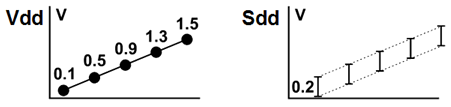

Creating a pattern for a dynamic DC test
In this step you create a main pattern for the dynamic DC test. The pattern will be called "ramp". You create it in the Pattern Explorer.
About this task
In the following steps you will specify the voltage force waveform to be driven on the DPS pin, and the expected waveform to be measured on the PMU pin. You achieve this by specifying events and inserting test points, which activate those events in the pattern. The test points must be separated by sufficient settling time and ADC conversion time, as summarized in the graphic and table below. You do all of this in the Pattern Editor.

Vector |
Sequencer Instruction |
Test Point Operation |
|
|---|---|---|---|
Vdd |
Sdd |
||
63 |
|
frc_0.1V |
setRange7V |
64 |
RPTV 1, 40000 |
Settling time |
|
200 |
|
|
meaLimV_0.0_0.2 |
201 |
RPTV 1, 20 |
ADC conversion time |
|
300 |
|
frc_0.5V |
|
301 |
RPTV 1, 1000 |
Settling time |
|
400 |
|
|
meaLimV_0.4_0.6 |
401 |
RPTV 1, 20 |
ADC conversion time |
|
500 |
|
frc_0.9V |
|
501 |
RPTV 1, 1000 |
Settling time |
|
600 |
|
|
meaLimV_0.8_1.0 |
601 |
RPTV 1, 20 |
ADC conversion time |
|
700 |
|
frc_1.3V |
|
701 |
RPTV 1, 1000 |
Settling time |
|
800 |
|
|
meaLimV_1.2_1.4 |
801 |
RPTV 1, 20 |
ADC conversion time |
|
900 |
|
frc_1.5V |
|
901 |
RPTV 1, 1000 |
Settling time |
|
1000 |
|
|
meaLimV_1.4_1.6 |
1001 |
RPTV 1, 50 |
ADC conversion time |
|
You can prolong the interval by increasing the number of intermediate vectors (increasing the repeat count in the sequencer instructions).
Procedure
Results
You created the main pattern.
What to do next
You need to define the events, test points, and settling time intervals according to the table above.
Functional changes
- Introduced in SmarTest 6.5.2